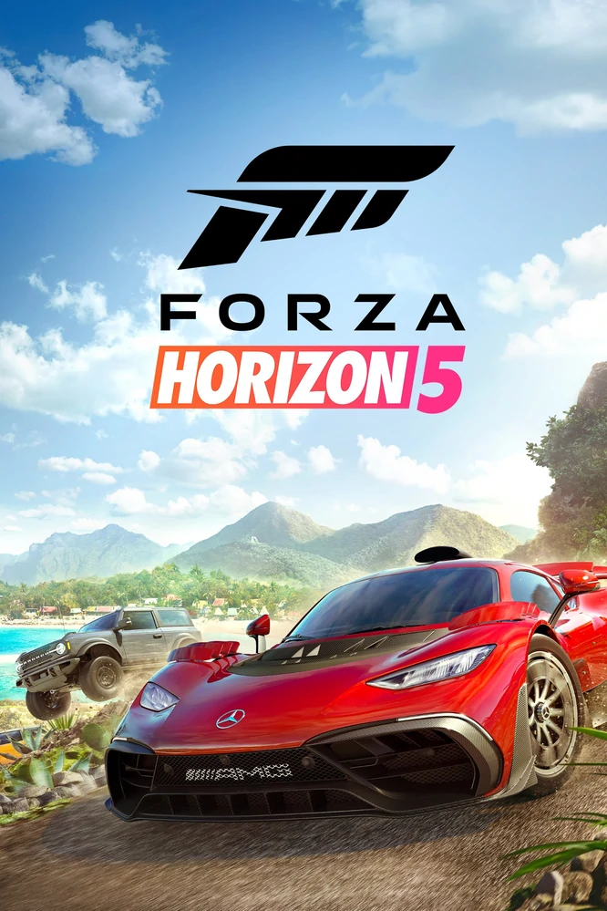

FORZA HORIZON 5
Kiss-Fodor Zsombor
rövid bevezető:
2021-ben adták ki, a Forza Horizon open world autós játéksorozatnak 5. része Mexikóba viszi el a játékost hogy felfedezzen sok érdekes helyet
sok érdekes autóban. Xbox és PC-re van és crossplay
Autók
Több mint 81 autó cég 514 autója közül választhatsz (ez a szám még lesz több is), legtöbbet csak simán megveszed a boltban
de vannak eldugott helyeken található autók, eventekben nyerhetőek, pörgetésen nyerhető és még több.
Sok autó visszatért Forza Horizon 4-ből és vannak új kocsik és régebbi Forza játékokból visszatérőek, pl. az 1982-es Delorean DMC 12
Forza Motorsport 4-ből

A játék borítóképe
Autó szerkesztés
Majdnem minden autót lehet fejelszetni, legyen az egy V12-es berakása egy 1997-es Civicbe vagy egy nagy Spoiler felrakása egy
McLaren P1-re. Egy új dolog benne az hogy tudhatot milyen hangja lesz az autótdnak anékül,hogy kilépnél
Karakter szerkesztés
Nem sokat változott a 4. rész óta viszont most az elöször van hangja a karakterednek. És több ruhát, emotot szerezhetsz, mint előzöleg
Autó ajándékozás
Ez egy új funkció miben a játékos egy nála lévő autót elajándékozhat, bárkinek vagy adott játékosonkak legyen az új, visszatérő vagy
egy nagy community tag
Vissza az oldal tetejére